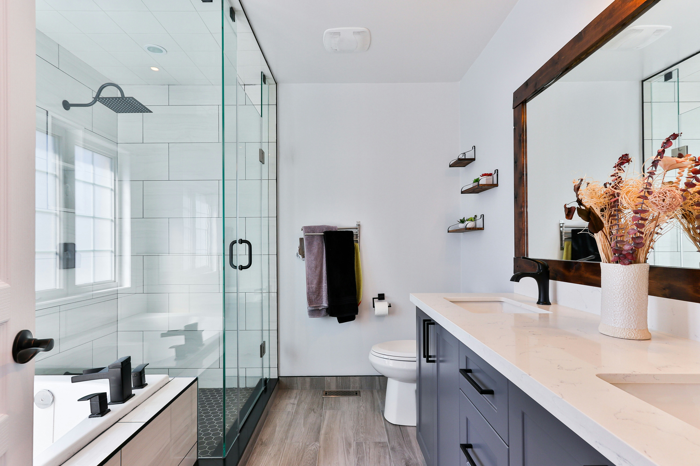
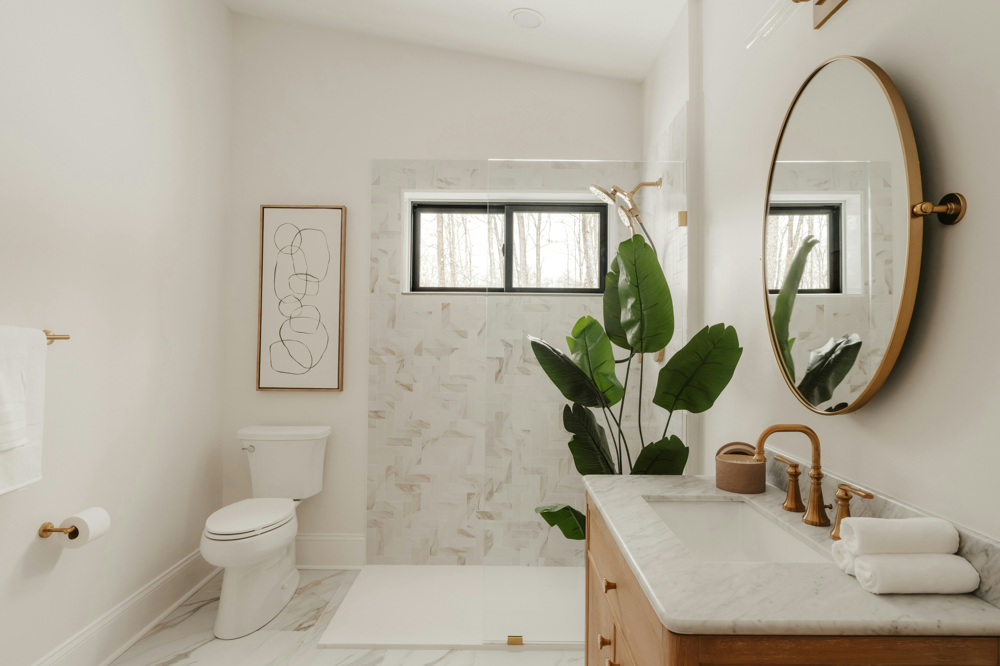
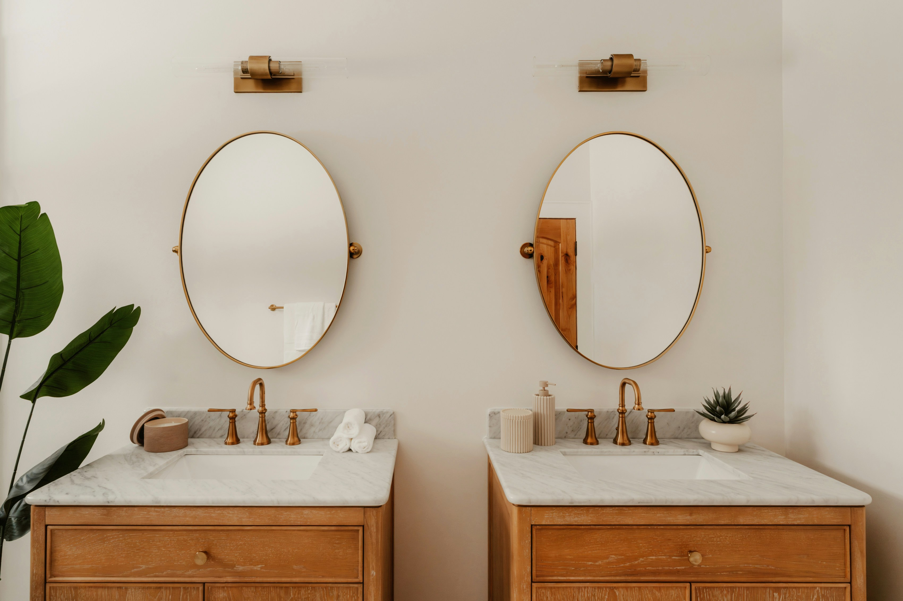

Kompletne adaptacije kupaonica
Od rušenja starog do montaže sanitarija: hidroizolacija, pločice, fuge i silikon. Jedan majstor od početka do kraja.
Sveta Nedelja, Samobor i zapadni Zagreb. Uredno, u roku, s 5 godina garancije na hidroizolaciju.
Pošalji sliku svoje kupaoniceOd rušenja starog do montaže sanitarija: hidroizolacija, pločice, fuge i silikon. Jedan majstor od početka do kraja.
Pločice na zidu i podu kuhinje, precizno i bez nereda.
Vanjske pločice otporne na mraz, s pravilnim padom za vodu.
Polaganje ploča 120 × 60 i većih, bez lomova i neravnina.




„Prvi majstor koji mi nije ostavio nered."
– gospođa M., Samobor
Ja sam Marko, keramičar s dugogodišnjim iskustvom, a radim s pomoćnikom Darijem. Bez podizvođača: kad nas zoveš, znaš tko ti dolazi u kuću.
Radimo u Svetoj Nedelji, Samoboru i zapadnom dijelu Zagreba. Izlazak na teren i procjena su besplatni.